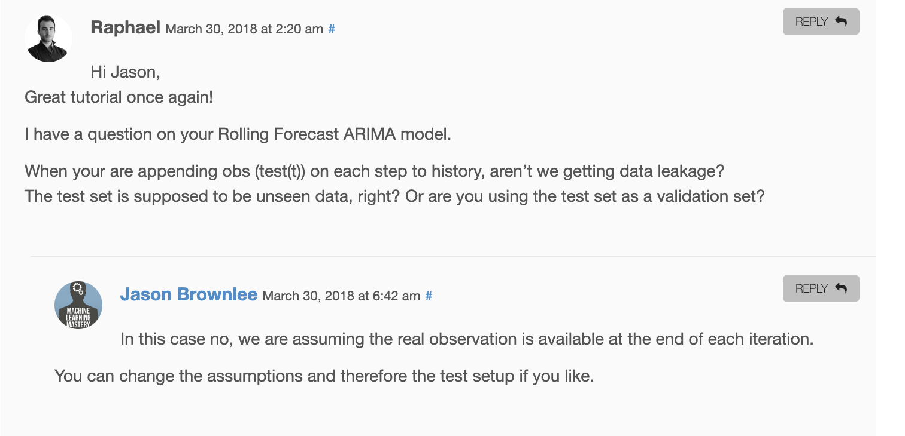
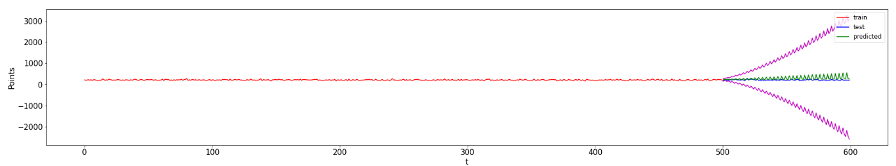

hellvetica ne trebas ponovo fitat modele da se rijesis ravne crte, samo mijenjaj hiperparametre
sheriffHorsey Koje konkretno? Jer radio sam grid search i dosl sve mi rezultira ravnom crtom. Na drugim hiperparametrima bude drugacija al bude konstanta. Za ARIMA isto
hellvetica Npr za exponential smoothing mi ovi hiperparametri ne daju ravnu crtu za predikcije:
seasonal_periods=26, trend='add', seasonal='add', use_boxcox=True, damped=True, initialization_method='estimated'
hellvetica iz test seta
fooFighter al to je dataleak onda jer ga fitas na djelovima test seta
garica hellvetica U ovom clanku pod Rolling Forecast ARIMA Model autor koristi test set, i u komentarima opravdava da to nije data leak. Mozda je svejedno kako racunamo ako nisu napomenuli pretpostavku?

ja za svaku predikciju iz test seta fittam model na skupu train_set + moje_dosadasnje_predikcije_za_test, tu nema leaka i nemam konstantne predikcije, ali i dalje su to toliko male razlike u predikcijama da opet izgleda kao ravna crta
dolaze kome ovakvi cudni grafovi nakon optimiranja seasonality parametra u ARIMA algoritmu? 
sheriffHorsey kak si odredio ove parametre? random ili ima neke logike? ja sam sve i svasta isprobala i nisam mogla nesto bolje od ravne crte dobit
wesley kombinacija random lupanja + domaci grid search kad mi je to dopizdilo
Koliko vam je period generiranog signala?
MalaPumpa to nije data leak sigurno. data leak bi ovdje bio jedino ako treniras model na podacima koji su kronoloski kasnije od onih nad kojima testiras.
ja sam se držao ovog sa samo jednim fittanjem modela jer sam našao u primjerima u dokumentaciji statsmodelsa https://www.statsmodels.org/dev/examples/notebooks/generated/exponential_smoothing.html#Holt%E2%80%99s-Winters-Seasonal
Labos danas u 9:00
Pitanje na blicu je bilo: Sta prestavljaju parametri P i Q u ARIMA modelu?
Ispitivanje biljeznice generalno nis posebno, samo pokazi di si radio ovo di si radio ono i to je to.
Pitanje danas: koje su komponente u PROPHETu (odgovor: trend, seasonal, holiday)
Kak treba nazvat ovu zadnju biljeznicu koja sluzi za rangiranje ?
𝐓𝐇𝐄 𝐒𝐄𝐂𝐑𝐄𝐓 - 𝐂𝐋𝐔𝐁 [Rank <jmbag>] https://www.fer.unizg.hr/predmet/dap/obavijesti?@=2vy0y#news_143093
nije potrebno uopce predavat taj notebook za rang ako vec imamo skupljeno dovoljno bodova na obaveznim biljeznicama?
garica nije to je za dodatne bodove, ak imas 24 na projektu si okej